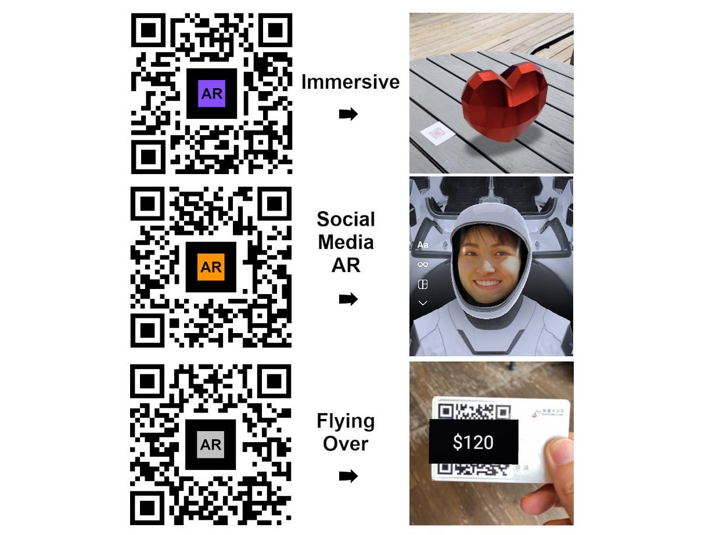

What is Augmented Reality
Augmented Reality is viewing the world through an augmented lens created with new technologies.
Augmented reality works by showing you the world around you as it is then overlaying new images or elements to it that augment and change how the world is perceived in that lens.
Marker-Based AR uses QR codes like this to create AR objects!
Try scanning the QR


Uses for AR

- • Furniture companies allow you to see how items will look in your house while they're not physically there.
•Used in many cars backup cameras and parking eagle eye cameras and navigation
•Manufacturing is starting to use AR to visualize where certain parts should go.
•Entertainment and Gaming, many games are being and have been developed.

- •Architecture is using AR to visualize buildings and creations before construction begins.
VR vs. AR

Augmented Reality
AR uses the world around you and brings in new computer generated elements.

Virtual Reality
VR puts users in a artificial environment through the use of headsets and provides a fully artificial experience completely disconnected from the real world.

Mixed Reality
Mixed Reality combines virtual and real-world elements, allowing interaction with both physical and digital objects, this is where most Augemnted Reality devices are headed.

Extended Reality
XR is the culmination of all 3 other types of sensory changing technologies (MR,VR, AR).